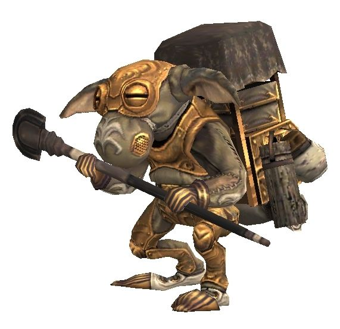

Level 75 reference · Zenith rules
The Moblin are a tribe of Goblins. Most Moblins are troglodytes, preferring to live in the darkest parts of Vana'diel. Yet, there have been a few that have ventured out of Movalpolos, their subterranean city. The Moblins are known for their exceptional smithing and alchemy skills. Their achievements include complex drilling apparatuses and floodlights, as well as several advancements in exotic fields such as bionics. It is even rumored that their ability in these areas matches or exceeds that of the scientists in Bastok.
A faction of Moblins that sprung from Movalpolos are the current employers of the Troll Mercenaries in the Halvung Territory and the rest of the Near East. Known as the Halvung Moblins, their leader is the mad scientist known as Megomak.
General Information |
 Image source |


Special Attacks
| Special Abilities | Promathia Areas | Aht Urhgan Areas | ||
| Goblin Rush: Single target triple attack with Knockback | ||||
| Frypan: 10' AoE damage and Stun | ||||
Paralysis Shower: Cone Attack Paralysis.
|
||||
Crispy Candle: Cone Attack Fire damage.
|
||||
Smokebomb: Cone Attack Blind.
|
||||
| Note: Notorious Monsters in this family may use all of the above and/or additional unique special abilities. | ||||
Notorious Monsters in Family
| Name | Spawn Information | Level | Zone | Notable Drop(s) |
|---|---|---|---|---|
| Mythril Mouth Monamaq | Spawns around (H-9) on the second map | Halvung | Volunteer's Earring | |
|
Quest NMs: Book Browser Bokabraq, Chemical Cook Chemachiq, Dread Dealing Dredodak, Grimoire Guru Grimogek, Moblin Clergyman, Moblin Wisewoman, Spell Spitter Spiluspok, Twilotak Mission NMs: Chekochuk, Movamuq, Swipostik, Trikotrak Battlefield NMs: Moblin Fantocciniman (ENM) Other NMs: Martial Maestro Megomak (Assault) | ||||

Monsters in Family
Adapted from Eden Wiki: Category:Moblins · Contributors and history · CC BY-SA 4.0. Revision 14042. Layout, links and optional background text adapted for Zenith.
Articles
- Book Browser Bokabraq
- Chekochuk
- Chemical Cook Chemachiq
- Dread Dealing Dredodak
- Grimoire Guru Grimogek
- Martial Maestro Megomak
- Moblin Aidman
- Moblin Ashman
- Moblin Billionaire
- Moblin Chapman
- Moblin Clergyman
- Moblin Coalman
- Moblin Draftsman
- Moblin Dustman
- Moblin Engineman
- Moblin Fantocciniman
- Moblin Gasman
- Moblin Groundman
- Moblin Gurneyman
- Moblin Millionaire
- Moblin Pickman
- Moblin Pikeman
- Moblin Ragman
- Moblin Repairman
- Moblin Roadman
- Moblin Rodman
- Moblin Scalpelman
- Moblin Tankman
- Moblin Topsman
- Moblin Wisewoman
- Moblin Witchman
- Moblin Workman
- Moblin Yardman
- Movamuq
- Mythril Mouth Monamaq
- Spell Spitter Spiluspok
- Swipostik
- Trikotrak
- Twilotak